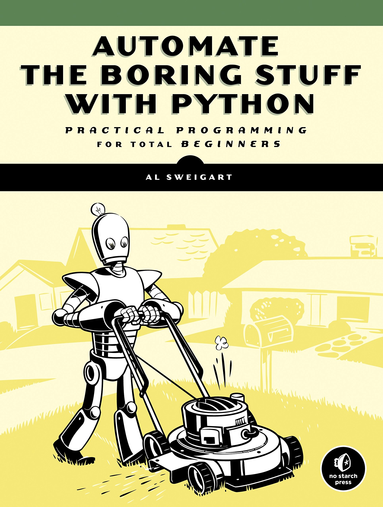
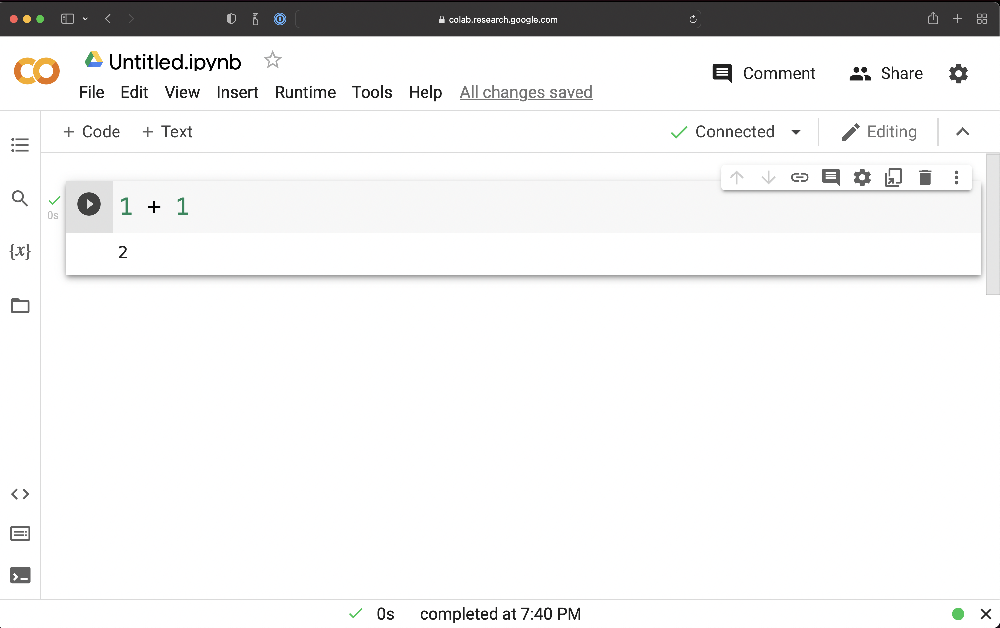

3Python
ACTL3143 & ACTL5111 Deep Learning for Actuaries
Patrick Laub
Recording of this lecture
A recording covering (most of) this Python content:
Data Science & Python
Lecture Outline
Data Science & Python
Python Data Types
Collections
Control Flow
Python Functions
Import syntax
Lambda functions
About Python

It is general purpose language
Python powers:
- Spotify
- Netflix
- Uber
- Reddit…
Python is on Mars.
Stack Overflow 2021 Dev. Survey
- Python is 3rd most popular language
- Python is the most wanted language
- In ‘Other frameworks and libraries’, they note that “several data science libraries for Python make strong showings”.

Github’s 2021 State of the Octoverse

Top languages over the years
Source: Kaggle (2021), State of Machine Learning and Data Science.
Python and machine learning
…[T]he entire machine learning and data science industry has been dominated by these two approaches: deep learning and gradient boosted trees… Users of gradient boosted trees tend to use Scikit-learn, XGBoost, or LightGBM. Meanwhile, most practitioners of deep learning use Keras, often in combination with its parent framework TensorFlow. The common point of these tools is they’re all Python libraries: Python is by far the most widely used language for machine learning and data science.
Source: François Chollet (2021), Deep Learning with Python, Second Edition, Section 1.2.7.
Python for data science

In Leganto
Google Colaboratory
An example notebook in Google Colaboratory.
Python Data Types
Lecture Outline
Data Science & Python
Python Data Types
Collections
Control Flow
Python Functions
Import syntax
Lambda functions
Variables and basic types
Shorthand assignments
If we want to add 2 to a variable x:
Same for:
x -= 2: take 2 from the current value ofx,x *= 2: double the current value ofx,x /= 2: halve the current value ofx.
Strings
and & or
Important
The dot is used denote methods, it can’t be used inside a variable name.
help to get more details
f-strings
Converting types
Quiz
What is the output of:
True and FalseWhat would you add before line 3 to get “True and True”?
Collections
Lecture Outline
Data Science & Python
Python Data Types
Collections
Control Flow
Python Functions
Import syntax
Lambda functions
Lists
Slicing lists
A common indexing error
--------------------------------------------------------------------------- TypeError Traceback (most recent call last) Cell In[36], line 1 ----> 1 desires[1.0] TypeError: list indices must be integers or slices, not float
--------------------------------------------------------------------------- TypeError Traceback (most recent call last) Cell In[37], line 1 ----> 1 desires[: len(desires) / 2] TypeError: slice indices must be integers or None or have an __index__ method
Editing lists
['Coffee', 'Cake', 'Sleep', 'Gadget']None
Tuples (‘immutable’ lists)
<class 'tuple'>
3
Rainy--------------------------------------------------------------------------- AttributeError Traceback (most recent call last) Cell In[51], line 1 ----> 1 weather.append("Snowy") AttributeError: 'tuple' object has no attribute 'append'
One-length tuples
Dictionaries
Quiz
4 and 5Control Flow
Lecture Outline
Data Science & Python
Python Data Types
Collections
Control Flow
Python Functions
Import syntax
Lambda functions
if and else
The weird part about Python…
Cell In[66], line 4 print("You're still young") ^ IndentationError: expected an indented block after 'else' statement on line 3
Warning
Watch out for mixing tabs and spaces!
An example of aging
Using elif
for Loops
Advanced for loops
Patrick wants a coffee, it is priority #1.
Patrick wants a cake, it is priority #2.
Patrick wants a sleep, it is priority #3.desires = ["coffee", "cake", "nap"]
times = ["in the morning", "at lunch", "during a boring lecture"]
for desire, time in zip(desires, times):
print(f"Patrick enjoys a {desire} {time}.")Patrick enjoys a coffee in the morning.
Patrick enjoys a cake at lunch.
Patrick enjoys a nap during a boring lecture.List comprehensions
They can get more complicated:
[[0, 0, 0, 0], [0, 1, 2, 3], [0, 2, 4, 6], [0, 3, 6, 9]]but I’d recommend just using for loops at that point.
While Loops
Say that we want to simulate (X \,\mid\, X \ge 100) where X \sim \mathrm{Pareto}(1). Assuming we have simulate_pareto, a function to generate \mathrm{Pareto}(1) variables:
Breaking out of a loop
>> What would you like to do? order cake
Here's your cake! 🎂
>> What would you like to do? order coffee
Here's your coffee! ☕️
>> What would you like to do? order cake
Here's your cake! 🎂
>> What would you like to do? quitQuiz
What does this print out?
Math sometimes works..What does this print out?
10Debugging the quiz code
Python Functions
Lecture Outline
Data Science & Python
Python Data Types
Collections
Control Flow
Python Functions
Import syntax
Lambda functions
Making a function
Here, name is a parameter and the value supplied is an argument.
Default arguments
Assuming we have simulate_standard_normal, a function to generate \mathrm{Normal}(0, 1) variables:
Note
We’ll cover random numbers next week (using numpy).
Use explicit parameter name
Why would we need that?
E.g. to fit a Keras model, we use the .fit method:
model.fit(x=None, y=None, batch_size=None, epochs=1, verbose='auto',
callbacks=None, validation_split=0.0, validation_data=None,
shuffle=True, class_weight=None, sample_weight=None,
initial_epoch=0, steps_per_epoch=None, validation_steps=None,
validation_batch_size=None, validation_freq=1,
max_queue_size=10, workers=1, use_multiprocessing=False)Say we want all the defaults except changing use_multiprocessing=True:
but it is much nicer to just have:
Quiz
What does the following print out?
[4]Multiple return values
Tuple unpacking
lims = limits([1, 2, 3, 4, 5])
smallest_num = lims[0]
largest_num = lims[1]
print(f"The numbers are between {smallest_num} and {largest_num}.")The numbers are between 1 and 5.smallest_num, largest_num = limits([1, 2, 3, 4, 5])
print(f"The numbers are between {smallest_num} and {largest_num}.")The numbers are between 1 and 5.This doesn’t just work for functions with multiple return values:
Short-circuiting
Import syntax
Lecture Outline
Data Science & Python
Python Data Types
Collections
Control Flow
Python Functions
Import syntax
Lambda functions
Python standard library
Import a few functions
Timing using pure Python
Data science packages

Common data science packages
Source: Learnbay.co, Python libraries for data analysis and modeling in Data science, Medium.
Importing using as
Importing from a subdirectory
Want keras.models.Sequential().
Alternatives using from:
Lambda functions
Lecture Outline
Data Science & Python
Python Data Types
Collections
Control Flow
Python Functions
Import syntax
Lambda functions
Anonymous ‘lambda’ functions
Example: how to sort strings by their second letter?
If you try help(sorted) you’ll find the key parameter.
The length of 'Josephine' is 9.
The length of 'Patrick' is 7.
The length of 'Bert' is 4.Anonymous ‘lambda’ functions
Example: how to sort strings by their second letter?
If you try help(sorted) you’ll find the key parameter.
The second letter of 'Josephine' is 'o'.
The second letter of 'Patrick' is 'a'.
The second letter of 'Bert' is 'e'.Anonymous ‘lambda’ functions
Example: how to sort strings by their second letter?
If you try help(sorted) you’ll find the key parameter.
Caution
Don’t use lambda as a variable name! You commonly see lambd or lambda_ or λ.
with keyword
Example, opening a file:
Most basic way is:
Haikus from http://www.libertybasicuniversity.com/lbnews/nl107/haiku.htm
Package Versions
from watermark import watermark
print(watermark(python=True, packages="keras,matplotlib,numpy,pandas,seaborn,scipy,torch,tensorflow,tf_keras"))Python implementation: CPython
Python version : 3.11.11
IPython version : 8.32.0
keras : 3.8.0
matplotlib: 3.10.0
numpy : 1.26.4
pandas : 2.2.3
seaborn : 0.13.2
scipy : 1.13.1
torch : 2.5.1+cu124
tensorflow: 2.18.0
tf_keras : 2.18.0
Links
If you came from C (i.e. are a joint computer science student), and were super interested in Python’s internals, maybe you’d be interested in this How variables work in Python video.
Glossary
- default arguments
- dictionaries
- f-strings
- function definitions
- Google Colaboratory
help- list
pip install ...range- slicing
- tuple
type- whitespace indentation
- zero-indexing